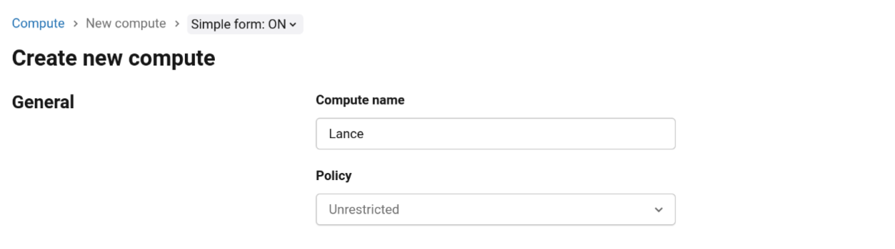
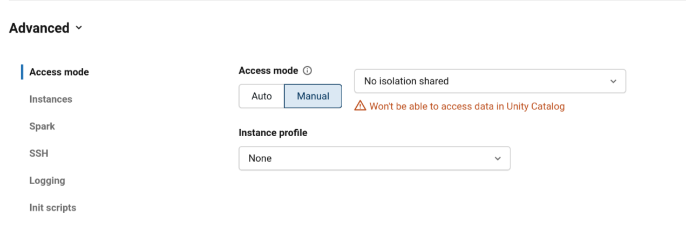
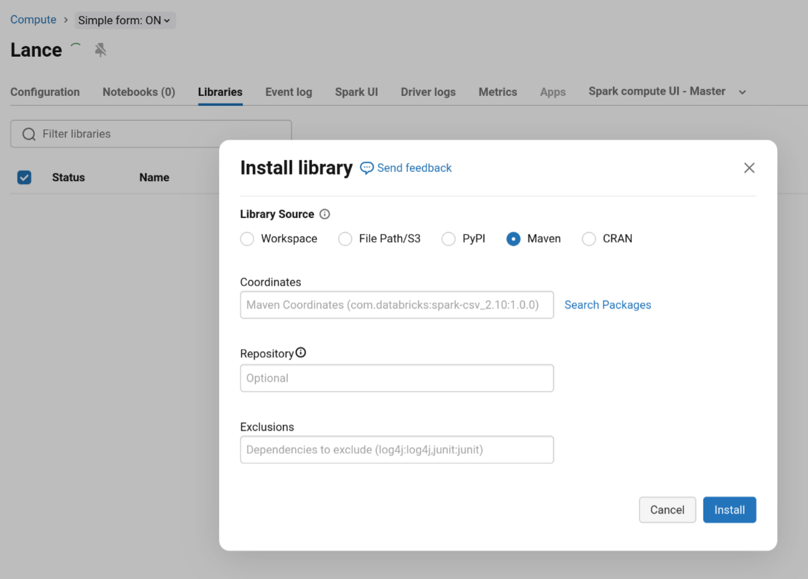
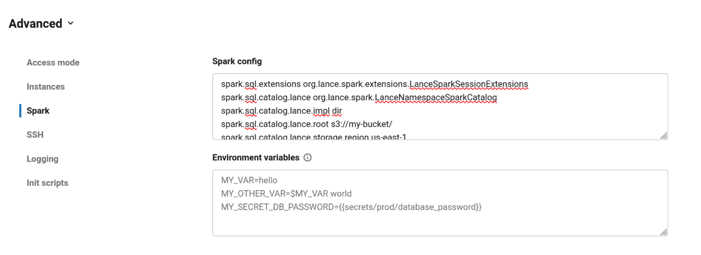
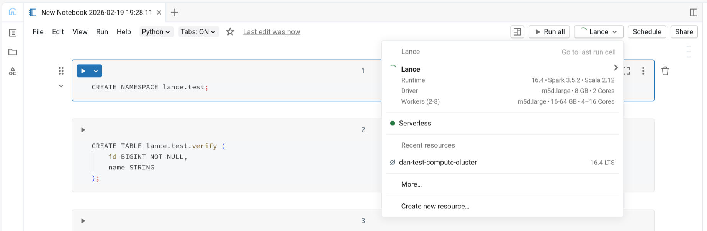

Databricks¶
Last updated: 2026-02-19
Classic Compute Setup¶
1. Create a Cluster¶
To create a cluster, navigate to Classic Compute → Create Cluster. The cluster Access Mode must be set to No isolation shared. This is required for loading custom Spark data sources on Databricks. You can set this by using Policy: Unrestricted and configuring the access mode under Advanced cluster configuration.


Note
This guide is tested with Databricks Runtime 16.4 LTS. Other runtimes may work but have not been tested.
2. Install the Lance Spark Library¶
The Lance Spark bundled JAR is the recommended artifact for Databricks. It includes all dependencies, which avoids dependency conflicts and eliminates the need to manually install additional libraries.
To install the JAR, navigate to Classic Compute → <cluster> → Libraries → Install New and choose the Lance Spark JAR source:
Search for the Lance Spark bundle artifact on Maven Central (e.g., org.lance:lance-spark-bundle-3.5_2.12).

Note
Some namespace implementations (e.g., to interface with external catalogs) may require additional libraries from the lance-namespace repository. These are also published on Maven Central and can be installed alongside the Lance Spark bundle using the same process.
3. Configure Spark¶
Navigate to Classic Compute → <cluster> → Advanced Configuration → Spark Config to populate namespace configuration options. The catalog must use LanceNamespaceSparkCatalog; other catalog-specific and namespace-specific properties should be set as needed. Refer to the Lance Spark Config docs for all available namespace implementations.

4. Verify Installation¶
To open a Databricks notebook, navigate to Workspace → <folder> → Create → Notebook. Use the dropdown to connect to the cluster you configured in the previous steps.

To verify that the Lance Spark library is properly installed and configured, run the following SQL commands in the notebook:
Known Limitations¶
Supported Environments¶
| Environment | Catalog | Support Status | Notes |
|---|---|---|---|
| Classic Compute | Unity Catalog | ❌ Not Supported | Does not support registering any data sources that are not part of the official Databricks Runtime |
| Classic Compute | Hive Metastore | ❌ Not Supported | Lance tables are stored as generic Hive Spark tables that can only be processed by Spark |
| Classic Compute | Lance Namespace | ✅ Supported | Recommended approach; bypasses Databricks catalog integration |
| SQL Warehouse | — | ❌ Not Supported | Does not support custom Spark data sources or SQL extensions |
SQL Extensions Not Available¶
Lance SQL extensions cannot currently be loaded in Databricks Classic Compute. See Spark SQL Extensions for a full list of features that are unavailable.
When this is resolved, you will be able to enable extensions by adding the following to your Spark Config: